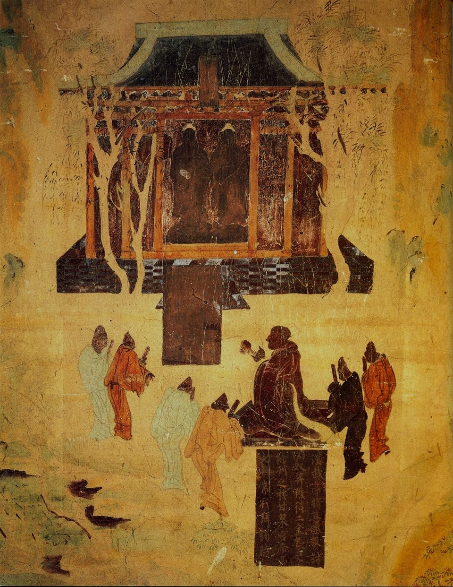

Lessons
2.2 Bump it up: Fu Hao's owl
A bronze owl-shaped wine vessel from the tomb of Fu Hao, a wife of a Shang king, analysed Level 6 to Level 9 on three rubric rows: origin, features and purpose; historical context; accuracy, usefulness and reliability. Starts with the Shang context.
🏮2.3 Daily life
The whole lesson online: the words, the video and its questions, the readings at Year 6, 7 or 8, the ruling and working classes table, and two sources checked level by level. Goes full screen.
Resources
Words
Vocab hub
102 words, lesson by lesson, 1.1 to 4.4, numbered as in the OneNote notebook, with each word's family and the whole unit word list: build each word from its parts, then use it. The word list shows every word, its meaning and what each part means, and prints.
🌐On the Word Builder
The topic's twenty words in nine languages, with spaced practice.
🌐On the Word Builder
Twenty source-analysis words in eighteen languages, shared by every topic that analyses a source.
📖What is source analysis?
The nine-page student booklet, ready to print.
This wall rehearses CAT 3. Every other wall on this site runs Foundation to Year 10, because it is showing a skill grow across a whole school. This one runs Level 6 to Level 9, because that is what the Ancient China Source Analysis Booklet rubric runs, and a student should be able to find their own CAT band on it.
Six rows, not four. They are the booklet's five numbered source-analysis rows plus the significance strand Task 3 adds, including historical perspectives, which the other walls on this site do not have. Each row also names the question it is marked from.
The painting is on the page. Source 1 used to be one line of text saying a painting existed. It is now the painting, with the emperor, the men taken from the courtyard, the burning books and the pit each openable on their own. The booklet does not record the artist, the date or the collection that holds it; see the source notice.
Draft. Written and levelled against the real rubric, but not yet taught.